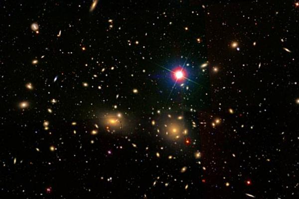

Латинское название: Coma Berenices
Береника, жена (и одновременно кузина) египетского царя Птолемея III Эвергета, принесла в жертву свои прекрасные волосы в связи с военной победой мужа над сирийским царем Селевком. Она поместила их на жертвеннике в храме Афродиты, а на на утро придворный жрец-астроном Конон объявил, что богиня приняла благодарственную жертву. В качестве подтверждения он сообщил, что обнаружил на небе семь звезд там, где раньше небо пустовало - это и есть вознесенные на небо в виде созвездия Волосы Вероники.
Эту достоверную историю рассказывает современник и почти участник событий Каллимах в своей "Косе Береники". Версии о пропаже волос из храма, истерике Береники, ярости царя и находчивости Конона - поздние интерпретации истории в духе эвгемеризма.
Гигантское скопление галактик. Число членов оценивается в 10.000, расстояние до скопления - 300 млн. св. лет.
В центральной области скопления, визуальным диаметром в полтора градуса, а физическим - примерно 8 млн. св. лет, сосредоточена половина галактик скопления: концентрация к центру - характерная особенность скоплений галактик типа скопления Кома.
Ну и наконец, в созвездии находится важная точка небесной сферы - северный полюс нашей Галактики.